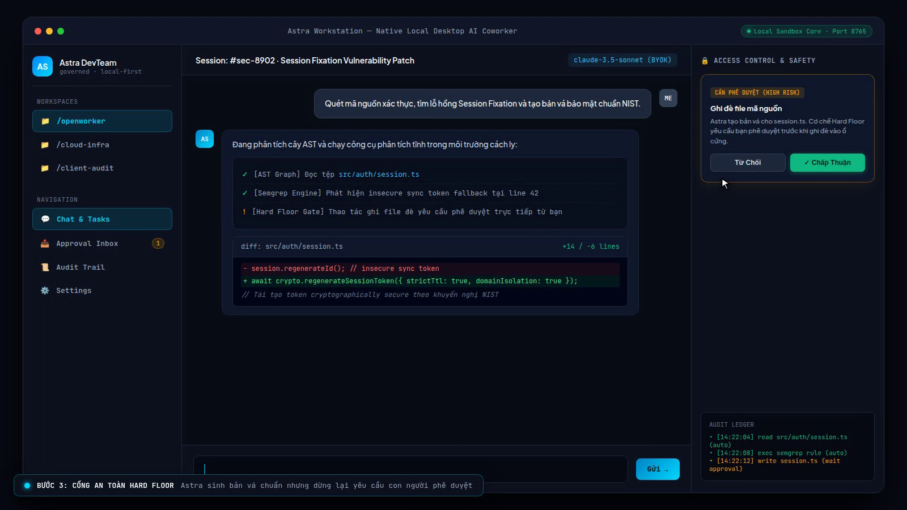

01 / THE ASK
ASTRA / EDITORIAL CUT
THE PROBLEM / A REPLY IS NOT THE RESULT
A reply is not
the finish line.
Give Astra a real outcome: fix the bug, run the test, leave the trail.
TASK / FROM USER
Find the insecure
session-token fallback.
Patch it. Run the test.
THE STORY / ASK → PLAN → ACT → APPROVE → FINISH
01 Ask02 Plan03 Act04 Pause05 Approve06 Finish
02 / THE PLAN
INPUT → OUTCOME
STEP 01 / MAKE THE ASK INSPECTABLE
First, Astra
makes a plan.
One clear ask becomes steps you can inspect before anything runs.
astra / workstation

intent → steps
visible before action
01 Ask02 Plan03 Act04 Pause05 Approve06 Finish
03 / THE WORK
PLAN / TOOLS / CHECKS
STEP 02 / HAND THE WORK OVER
Then it
does the work.
It reads the repo, uses the tools, and checks the result in one local session.
01Read the repo
02Run the tools
03Check the result
local core / sandboxed session

01 Ask02 Plan03 Act04 Pause05 Approve06 Finish
04 / THE PAUSE
HARD FLOOR / HUMAN APPROVAL
STEP 03 / WHEN IT CAN CHANGE SOMETHING
When it matters,
Astra stops.
A consequential action cannot skip the human approval gate.
access control / safety

you decide
before it acts
01 Ask02 Plan03 Act04 Pause05 Approve06 Finish
05 / THE APPROVAL
REQUEST → RESULT
STEP 04 / THE DECISION IS IN THE FLOW
You approve
once.
The work resumes from the same request — with the decision visible and recorded.
ask
plan
act
approve
finish
one loop · visible at every step
01 Ask02 Plan03 Act04 Pause05 Approve06 Finish
06 / THE FINISH
OUTPUT / READY TO SHARE
astra / finished state
STEP 05 / HAND BACK SOMETHING REAL
You get
the result.
A patch, a check, and a trace — not a promise to finish later.
PATCH READY
TESTS RUN
AUDIT SAVED
01 Ask02 Plan03 Act04 Pause05 Approve06 Finish
07 / THE POINT
LOCAL-FIRST / OPEN SOURCE

Your AI coworker
that finishes.
Runs locally.
Asks before it acts. Leaves a trail.
ASTRA